TUGAS PERORANGAN/INDIVIDU
LAPORAN BAB 6
TEMPLATE-DRIVEN FORMS
Disusun Sebagai:
MATA KULIAH: PEMROGRAMAN WEB LANJUT
Oleh:
Moh. Khoirul Arifin/1741720051
TI-2B

PROGRAM STUDI D-IV TEKNIK INFORMATIKA
JURUSAN TEKNOLOGI INFORMASI
POLITEKNIK NEGERI MALANG
2019
Bab 6
Template-Driven Forms
Pada bab ini kita akan membahas penggunaan form dengan berbagai macam inputan, menampilkan validasi error, dan perbedaan antara template-driven forms dengan reactive form.
Membuat Form Boostrap
Pada sub bab ini kita akan membuat sebuah form dengan menggunakan bootstrap.
Untuk lebih jelasnya ikuti langkah berikut
buatlah sebuah component dengan nama contact
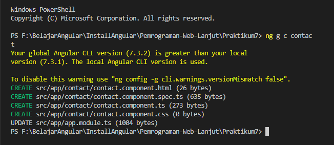
buka file contact.component.html dan tambahkan code berikut:
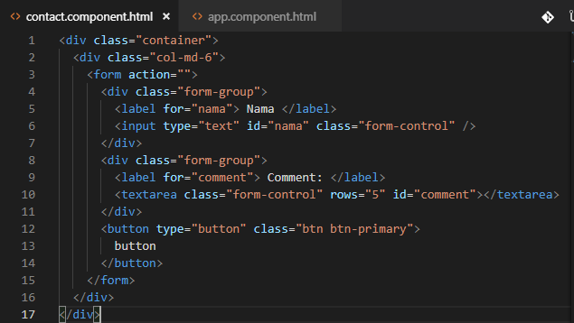
buka file app.component.html dan tambahkan code berikut
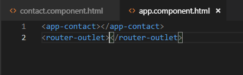
jalankan servernya maka hasilnya seperti berikut
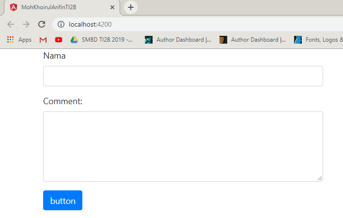
Macam-Macam Form
Dalam penggunaan form pada angular dapat menggunakan template-driven dan reactive form. perbedaan antara template-driven dan reactive form adalah pada reactive form biasanya juga disebut model-driven, penggunaan reactive form menghindari penggunaan directive seperti ngModel, required dsb. Pada reactive form ini menggunakan reactive-pattern, testing dan validasi yang bersifat synchrous. Untuk lebih jelasnya kita buat sebuah contoh penggunakan reactive form.
generate 2 buah component dengan nama reactive-form dan template-driven
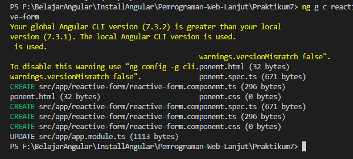
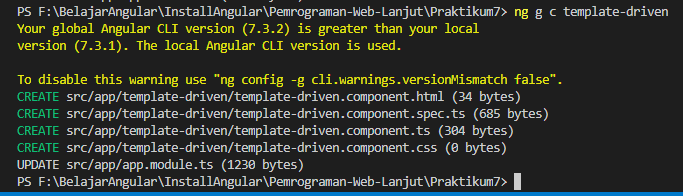
buka file reactive-form.component.html dan buatlah code seperti berikut
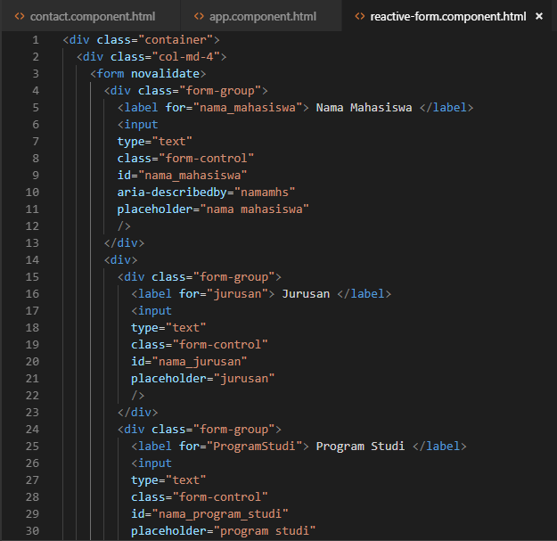
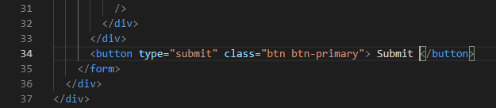
buka file app.component.html dan tambahkan code berikut
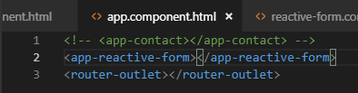
sehingga hasilnya seperti berikut
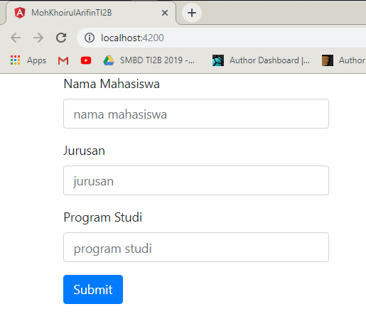
langkah berikutnya buatlah sebuah interface dengan nama mahasiswa.interface.ts dan tambahkan code berikut
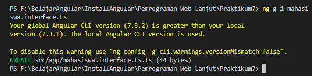
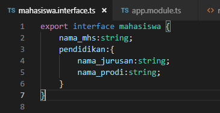
- Dikarenakan untuk menggunakan reactive-forms diperlukan FormBuilder dan FormGroup dari module ReactiveFormsModule maka kita harus tambahkan ReactiveFormModule dan FormGroup pada app.module.ts seperti pada gambar berikut
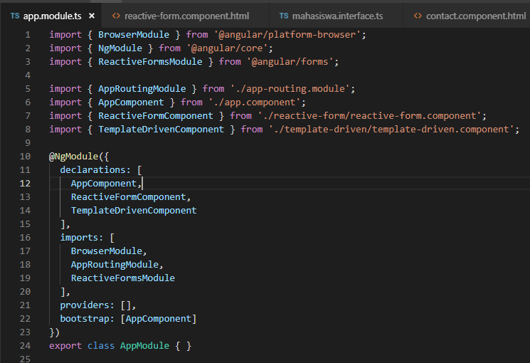
- buka file reactive-form.component.ts, import terlebih dahulu FormBuilder dan FormsGroup dan tambahkan beberapa code berikut
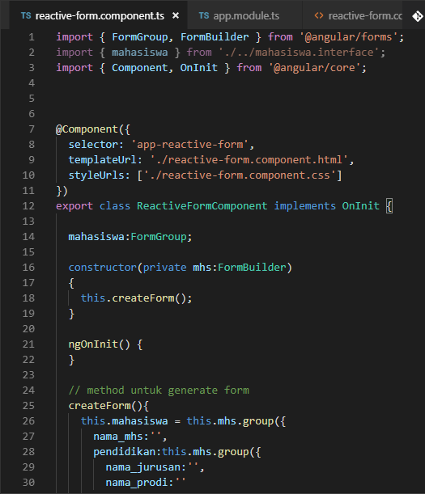
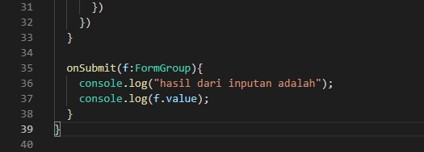
Penjelasan code
line 14 adalah sebuah property yang merupakan sebuah FormGroup
line 16-19 pada constructor terdapat parameter mhs yang merupakan FormBuilder dan dimana didalam constructor tersebut terdapat method untuk generate form
line 25-33 adalah method yang digunakan untuk mengenerate form yang sesuai dengan structur form
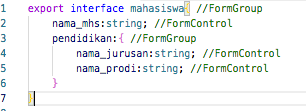
line 35-38 method yang digunakan untuk menampilkan isi dari inputan user ke dalam console
buka file reactive-form.component.html dan modifikasi codenya menjadi seperti berikut
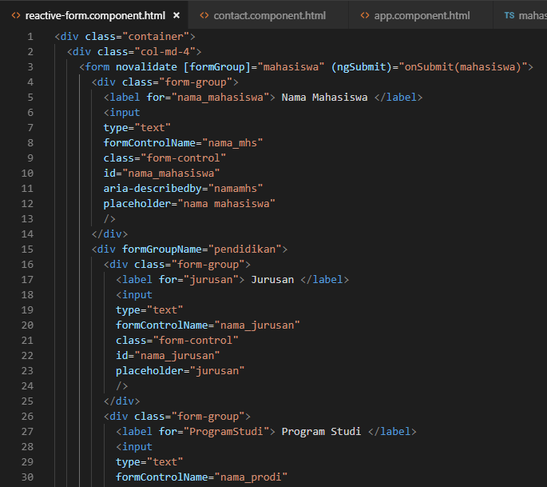
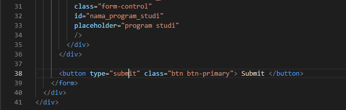
penjelasan code
- pada line 3 dan 15 terdapat FormGroup yaitu mahasiswa dan pendidikan seperti pada mahasiswa.interface.ts
pada line 3 terdapat event-binding yaitu ngSubmit dimana jika button submit diclik maka method onSubmit dengan parameter mahasiswa pada reactive-form.component.ts akan berjalan
line 9, 20, 30 adalah FormControlName sesuaikan dengan interface mahasiswa
jalan server localhost maka hasilnya seperti berikut
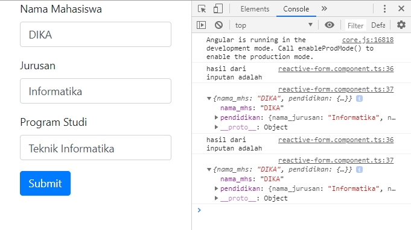
Percobaan diatas adalah penggunaan form menggunakan reactive-form untuk berikutnya kita akan membuat form menggunakan template-driven. Untuk lebih jelas ikuti langkah berikut ini:
- untuk template-driven kita membutuhkan FormsModule pada app.module.ts, jadi buka file app.module.ts dan tambahkan FormsModule
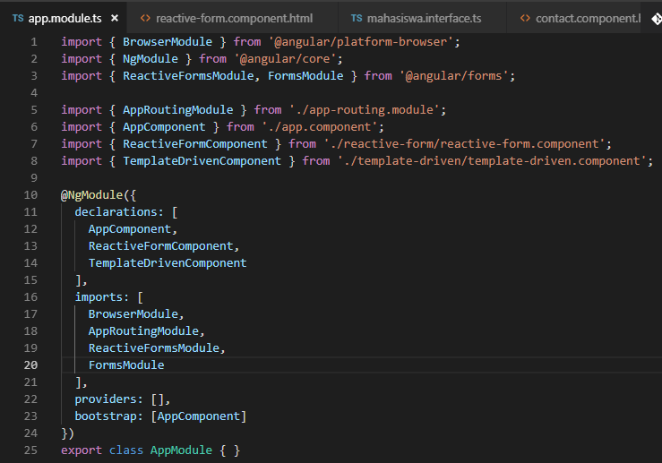
buka file template-driven.componentn.ts dan tambahkan struktur form seperti berikut
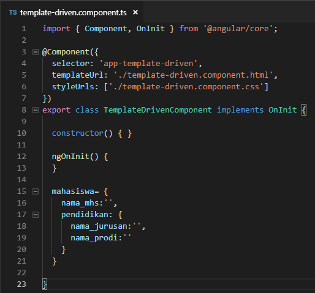
buka file template-driven.component.html dan tambahkan code berikut
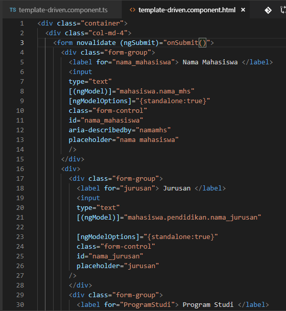
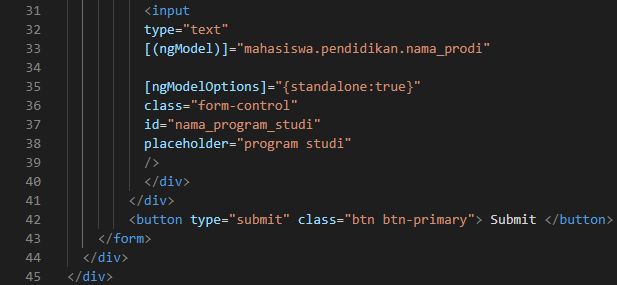
tambahkan method onSubmit pada template-driven.component.ts
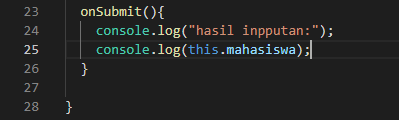
buka file app.component.html tambahkan code berikut
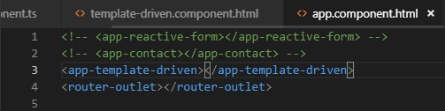
hasil
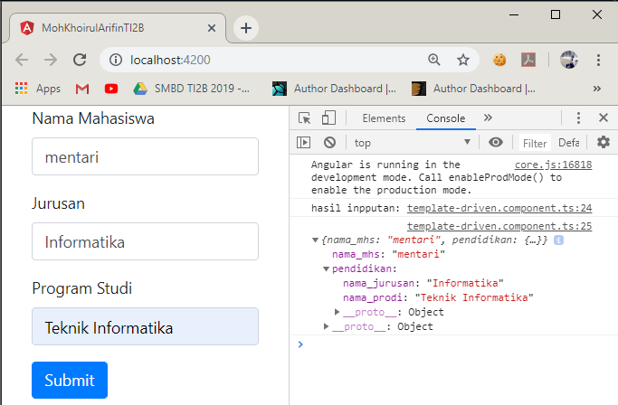
jika kita lihat hasilnya sama tetapi penggunaan directivenya yang berbeda
ngModel
ngModel adalah sebuah directive untuk binding data atau value ke variable, semisalnya terdapat kode seperti berikut :
- [(ngModel)]=”nama”
berarti value/nilai yang ada pada input yang memilki attribute tersebut akan masuk kedalam variable nama. Sebagai pembuktian lakukan beberapa percobaan berikut :
- buka file contact-form.component.html dan tambahkan ngmodel seperti berikut
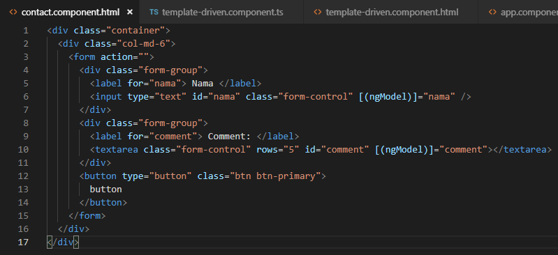
buka file contact-form.component.ts dan tambahkan decorator input ( line 9 dan 10)
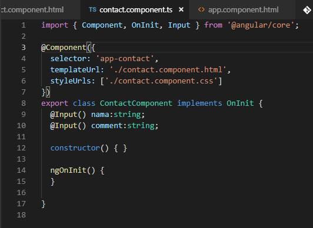
coba jalan servernya dan lihat terdapat pesan error seperti pada gambar berikut
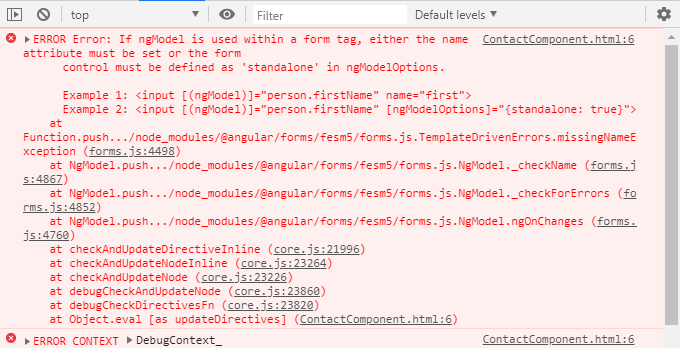
penjelasan error : hal ini disebabkan jika kita menggunakan ngModel maka kita harus menambahkan atribut name pada tag tersebut
- tambahkan atribut name pada tag input
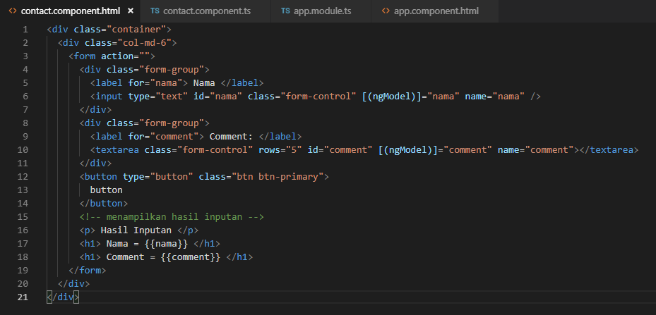
- jalankan servernya ( cat:tidak perlu diklik button untuk menampilkan data karena tidak menggunakan event binding jadi inputan akan langsung tampil saat user memasukan data)
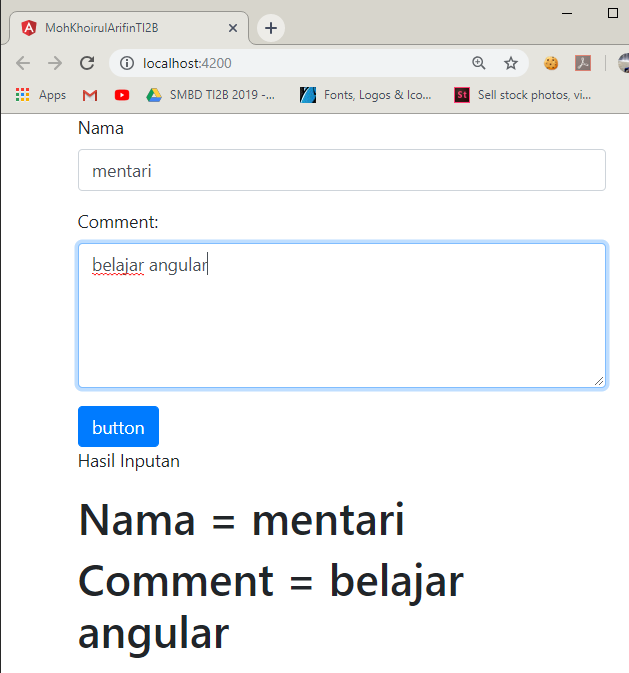
kita juga dapat melihat properties pada ngModel, Untuk lebih jelasnya ikuti langkah bertikut
buka file contact.component.html modifikasi code berikut ini: penjelasan code :
line 31 ngModel adalah directive
line 32 #firstname=”ngModel” adalah property dari ngModel atau template variable (#namavariabel)
line 33 (change)=”log(firstName)” adalah untuk melakukan perubahan pada method log dengan parameter firstName
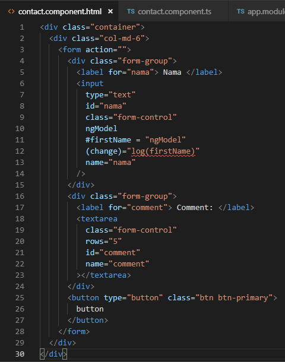
Pada textarea tambahkan juga ngModel seperti pada gambar berikut line 43
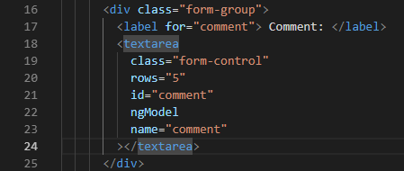
- buka file contact.component.ts modifikasi code berikut ini
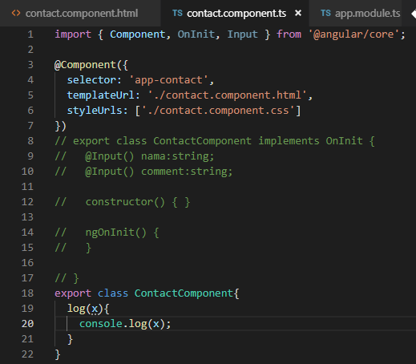
jalankan server dan lihat pada inspect maka akan muncul property dari ngModel
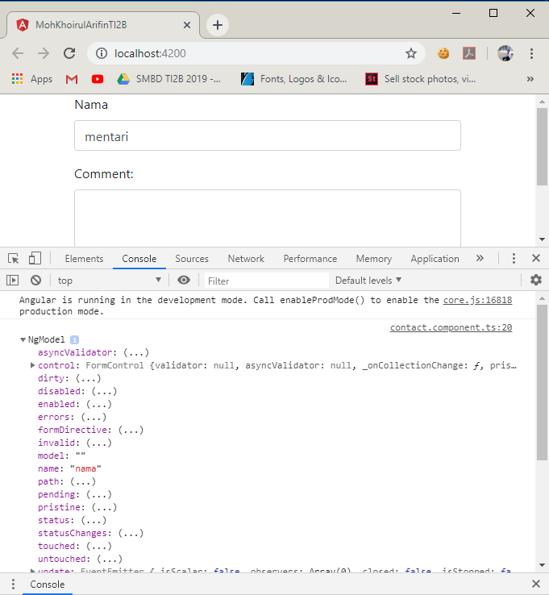
Penjelasan gambar
jika kita click pada (…) pada control maka akan muncul FormControl dan dimana terdapat instance dari FormControl Class di angular. Sebagai contoh ada property dirty yang digunakan untuk menentukan jika nilai dari inputan field berubah. jika kita click maka nilainya true hal ini karenakan kita memasukkan value di input field dan ada perubahan inputan sehingga dirty bernilai true
sedangkan kebalikan dari property dirty adalah pristine dan bernilai false
Validasi
Pada sub bab ini kita akan membuat sebuah validasi dengan menggunakan bantuan directive, untuk lebih jelasnya ikuti langkah berikut
- buka file contact.component.html dan tambahkan code berikut
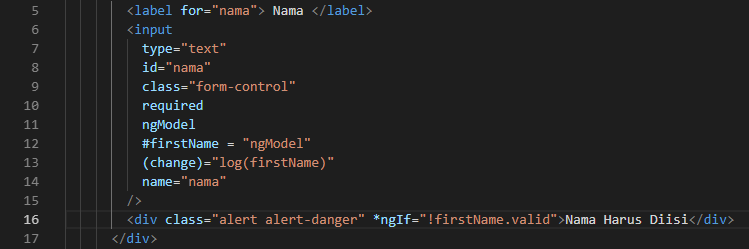
Penjelasan code
line 31 required berarti harus diisi
line 37 adalah alert, jika kondisi menggunakan directive ngif dimana jika firstName bernilai false atau dengan kata lain tidak ada isinya maka akan muncul alert.
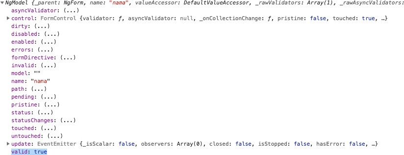
valid adalah sebuah property pada ngModel seperti pada gambar berikut ( cat : nilai valid berupa true dikarenakan ada isinya pada inputan textfield)
- jalankan localhost dan lihat hasilnya
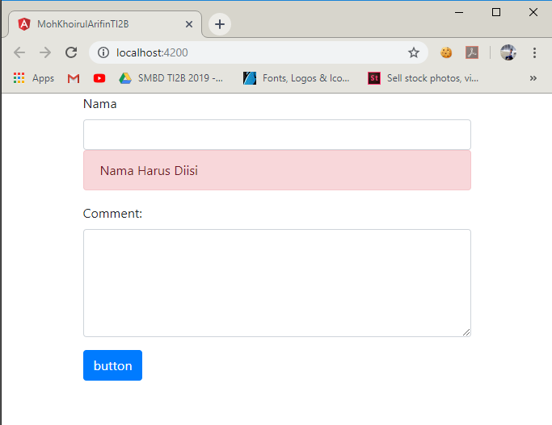
- jika kita jalankan maka secara default alert akan muncul. Untuk itu kita membutuhkan sebuah kondisi lagi. Buka file contact.component.html dan tambahkan code berikut (line 39)
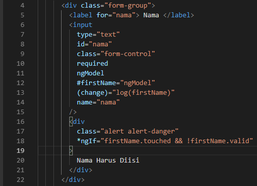
Penjelasan code:
pada line 39 terdapat directive ngIf terdapat 2 kondisi yaitu touched dan valid, jika kedua kondisi ini tidak terpenuhi maka akan muncul alert
jalankan localhost pada saat dijalankan maka secara default alert tidak akan muncul dan pada saat field nama dikosongkan maka akan muncul alert “Nama harus diisi”
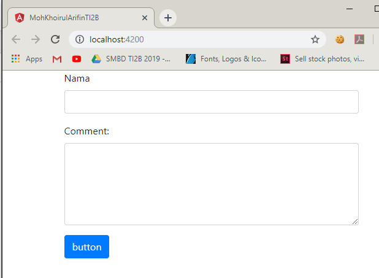
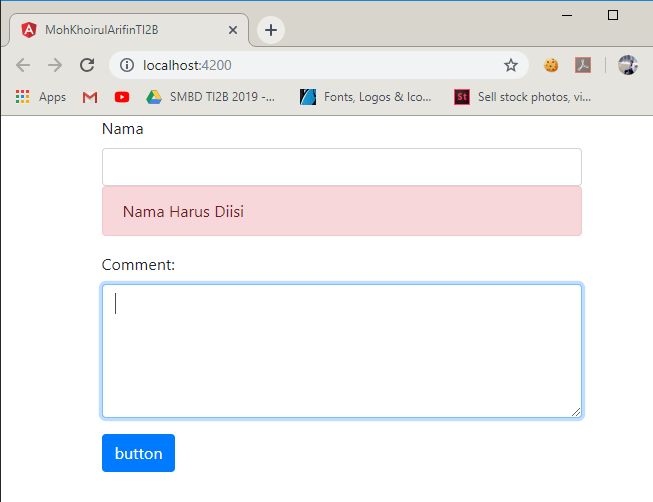
spesific validasi error
Ada beberapa macam untuk validasi error seperti minlength, maxlength, pattern dan required. Untuk lebih jelasnya ikuti langkah-langkah berikut :
- buka file conctact.component.html dan tambahkan beberapa code berikut
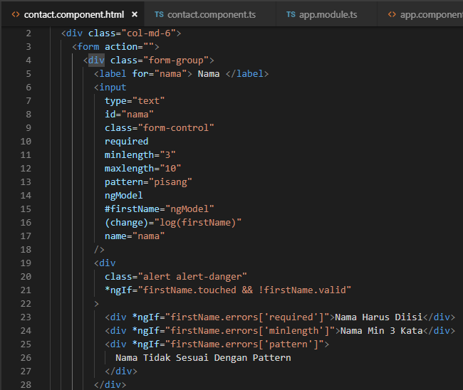
penjelasan code :
line 32 minlength adalah min abjad yang harus diisi
line 33 maxlenth adalah max panjang abjad
line 34 pattern adalah yang harus diisi
line 44 ngif (error required) adalah sebuah kondisi jika line 42 tidak terpenuhi
line 45 ngif (error minlength) adalah sebuah kondisi dimana nama kurang dari 3 abjad
linr 47 ngif (error pattern) adalah sebuah kondisi dimana jika inputan user tidak sesuai dengan patternnya
jalankan localhost jika kita masukkan angka 1
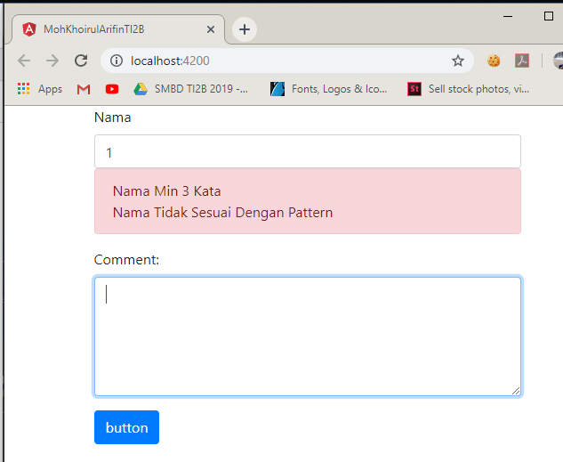
jika kita inspect element maka pada bagian property errors terdapat jenis-jenis validasi yang digunakan seperti pada gambar berikut
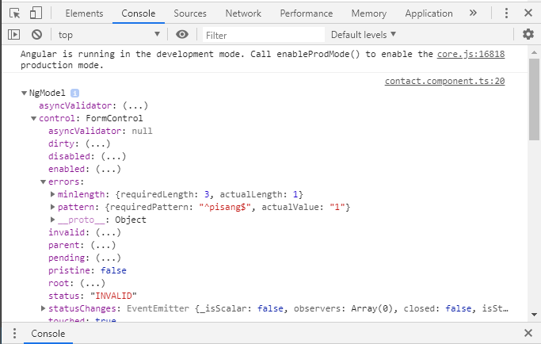
styling Invalid input field
Kita dapat menambahkan sebuah style pada input fieldnya sebagai contoh jika terdapat error maka selain menampilkan. Untuk lebih jelasnya ikuti langkah berikut
jika kita inspect element pada tab element dan kita click pada bagian form validation, maka pada element akan menunjukkan sebuah code angular ng-content class ng-invalid,ng-dirty dan ng-touched.
pada sub bab ini kita akan memodifikasi agar selain muncul alert pada form input akan merah juga
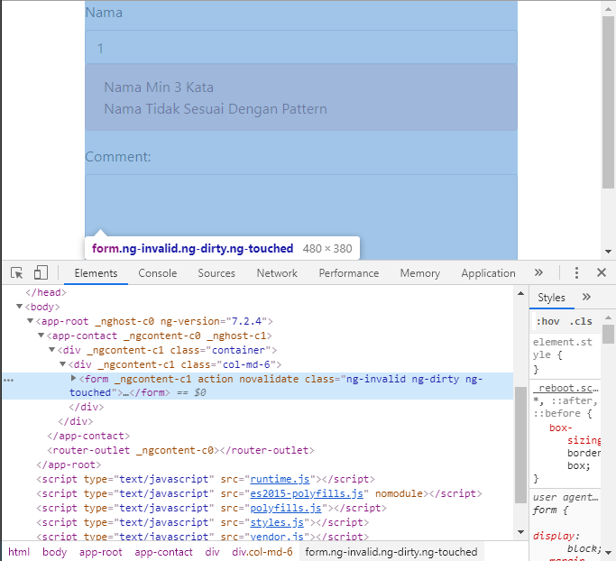
buka file contact.component.css dan tambahkan code berikut
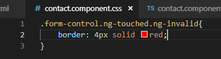
jalankan localhost jika kita inputkan salah
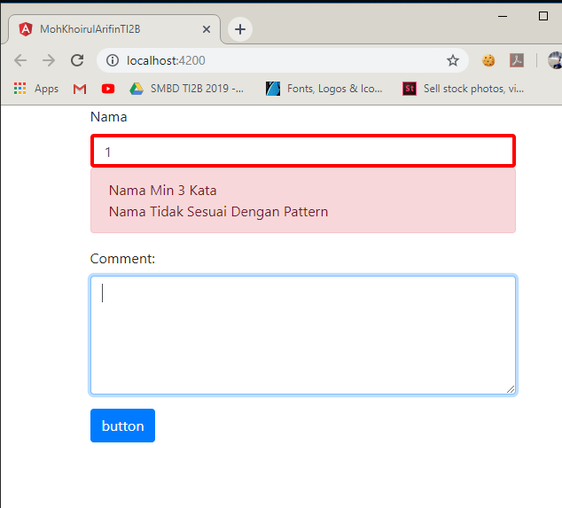
ngForm
ngForm adalah directive Angular yang penting untuk membuat template-driven forms. Mari kita mulai dengan ngForm dulu. Berikut adalah kutipan tentang ngForm dari dokumentasi Angular.
Directive NgForm melengkapi elemen form dengan fitur tambahan. Ini memegang kendali yang kamu buat untuk elemen dengan directive ngModel dan atribut name, dan memonitor properti mereka, termasuk keabsahannya. Ini juga memiliki properti valid sendiri yang mana hanya benar jika setiap kontrol yang terkandung itu benar. Untuk lebih jelasnya ikuti langkah-langkah berikut :
- buka file contact.component.ts dan tambahkan sebuah method submit seperti pada gambar berikut (line 23-25)
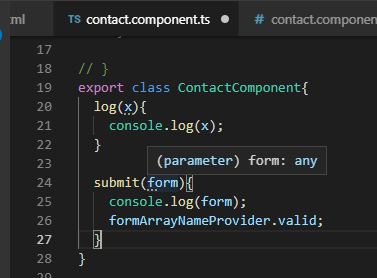
buka file contact.component.html dan buatlah sebuah template variabel ngForm atau property ngForm dengan nama form (#form) yang nanti digunakan sebagai parameter dari method submit seperti pada gambar berikut (line 24)
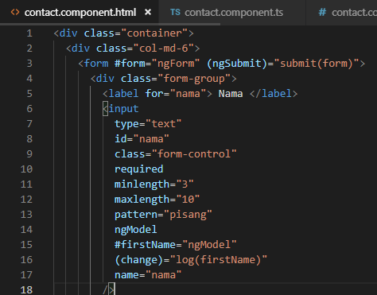
pada button rubah codenya menjadi \
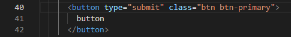
jalankan localhost dan inspect element, masukkan pada field nama adalah pisang dan
tambahkan pada text area kata-kata setelah itu tekan button. Maka pada saat di inspect element pada ngform property value:object terdapat nilai dari yang diinputkan user seperti pada gambar berikut
ngModelGroup
Terkadang kita bekerja dengan banyak form dan kita ingin membuat beberapa group dalam form tersebut sebagai contoh kita ingin inputan nama sebagai modelGroup sendiri maka lakukan hal berikut:
buka file contact.component.html dan tambahkan code (line 26-27) dan copy paste inputan nama ke dalam div ngModelGroup seperti pada gambar
- jika kita ingin membuat validasi pada ngFormGroup maka kita dapat menambahkan template variabel seperti pada gambar berikut
Disabling the submit button
Kita dapat membuat atau mengkondisikan button submit seperti button submit tidak akan dapat diklik jika nilai validnya sama dengan false. Untuk lebih jelasnya ikuti langkah berikut ( kondisikan contact.component.html seperti semula sebelum menggunakan ngFormGroup )
buka file contact.component.html dan tambahkan code berikut pada tag button
jalankan localhost jika berhasil secara default button akan disable, button akan enable saat terdapat inputan
bekerja dengan check box
Kita juga dapat menambahkan check box pada angular seperti berikut
- buka file contact.component.html dan tambahkan code check box seperti pada gambar berikut (line 66-73)
penjelasan code
line 66-70 adalah checkbox
line 68 terdapat property ngModel dengan name dengan nama isSubscribe
line 72 digunakan untuk menampilkan data menggunakan json
jalankan localhost
bekerja dengan drop-down list
selain menggunakan check box kita juga dapat menggunakan dropdown list. Untuk lebih jelasnya ikuti langkah berikut
- buka file contact.component.html tambahkan code untuk dropdown list seperti pada gambar berikut (line 72-77)
Penjelasan code :
line 72-77 adalah check box
line 74 terdapat property name=”conctactMethod” dari ngModel
line 75 terdapat directive ngfor dengan property binding [value] dan menampilkan data dengan string interpolar
buka file contact.component.ts dan tambahkan code berikut (line 21-24)
jalankan localhost maka hasilnya seperti berikut
Penjelasan Gambar: jika kita lihat pada gambar diatas saat kita memilih email maka pada json -> contactMethod bernilai 1 seperti pada contact.component.ts
{id:1,name:’email’}. Selain itu kita juga dapat menampilkan property id dan property nama dengan menggunakan property ngValue seperti berikut
sehingga hasilnya seperti berikut
selain itu juga kita dapat menggunakan multiple (line 74) jika ingin memilih keduanya seperti pada gambar berikut
sehingga hasilnya seperti berikut (tekan control untuk dapat memilih keduanya)
bekerja dengan radio button
Selain menggunakan check box dan dropdown list kita juga dapat menggunakan radio button, seperti berikut
buka file contact.component.html dan tambahkan code berikut (line 83-94)
catatan jika kita tidak menambahkan ngModel (line 85 dan line 91) pada input maka saat kita memilih salah satu radio button value tidak bisa muncul
jalankan localhost (menggunakan ngModel)
jalankan localhost (tanpa menggunakan ngModel)
atau kita bisa menggunakan directive ngFor untuk menampilkan value seperti berikut
sehingga hasilnya juga sama